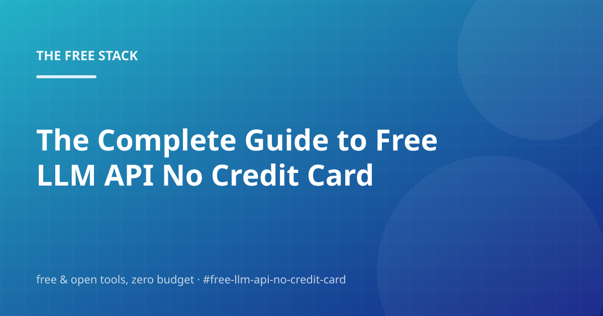

The Complete Guide to Free LLM API No Credit Card (2026)

Let's be honest: the internet is full of posts that pretend free llm api no credit card is complicated. It isn't. What's actually complicated is separating the free options that hold up from the free options that quietly become $20/month. That's what this post digs into.
We'll walk through Gemini API Free Tier, Groq Free Tier, Hugging Face Inference, and Openrouter Free Models — and finish with the questions people actually ask, so you can check before you buy anything. You shouldn't have to buy anything.
Gemini API Free Tier
The short version: Google's Gemini API has a free tier with per-minute and per-day model quotas — no credit card required.
In other words: You sign in with a Google account, create a key in AI Studio, and call the models over an OpenAI-compatible endpoint. The free tier's rate limits are more than enough for a blog that writes a few posts a day, and the paid tier is only for when you outgrow the quotas.
For a personal project or side business, this covers you without breaking a sweat.
- Create a Google AI Studio API key
- Point any OpenAI-compatible client at the Gemini OpenAI endpoint
- Set LLM_BASE_URL, LLM_API_KEY and LLM_MODEL and this engine writes with it
Groq Free Tier
The short version: Groq offers a free tier for open-weight LLMs with some of the fastest inference speeds anywhere.
The upshot: Llama-family models run on dedicated hardware that makes response times almost embarrassing, and the free tier has enough tokens for a daily content job. It plugs into this engine through the same OpenAI-compatible interface as every other provider.
Write down what you change and why — your future self will thank you.
Hugging Face Inference
Here's the part most people get wrong. Hugging Face hosts thousands of open models and offers free inference access for personal projects.
Concretely: It is the natural home for open-weight models: you find the model card, read the license, and call it through the Inference Providers API. Free allowances vary by model and provider, but the catalog is the largest in the open ecosystem.
No signup wall, no credit card — just a README and some patience.
Openrouter Free Models
First, the thing that actually matters: OpenRouter aggregates dozens of model providers behind one API, and a set of models carry a ':free' suffix with no credit card required.
Which, in day-to-day terms, means: One key, one endpoint, many backends — you can switch models in a config line and keep the same code. The free models rotate, but the pattern is stable: check the model list, pick the ones marked free, done.
The links in the sources section go straight to the primary docs.
Frequently asked questions
What are the real limitations of free llm api no credit card?
Mostly, yes. Groq offers a free tier for open-weight LLMs with some of the fastest inference speeds anywhere. Free tiers are generous for personal projects, but a growing business should read the pricing page before scaling into it.
What would you do first if you only had one free afternoon?
Hugging Face hosts thousands of open models and offers free inference access for personal projects. Treat that as the working assumption and re-check the docs once a quarter.
How much do I need to know before trying free llm api no credit card?
Less than you'd think. Google's Gemini API has a free tier with per-minute and per-day model quotas — no credit card required. Start there and only add pieces when you feel actual pain.